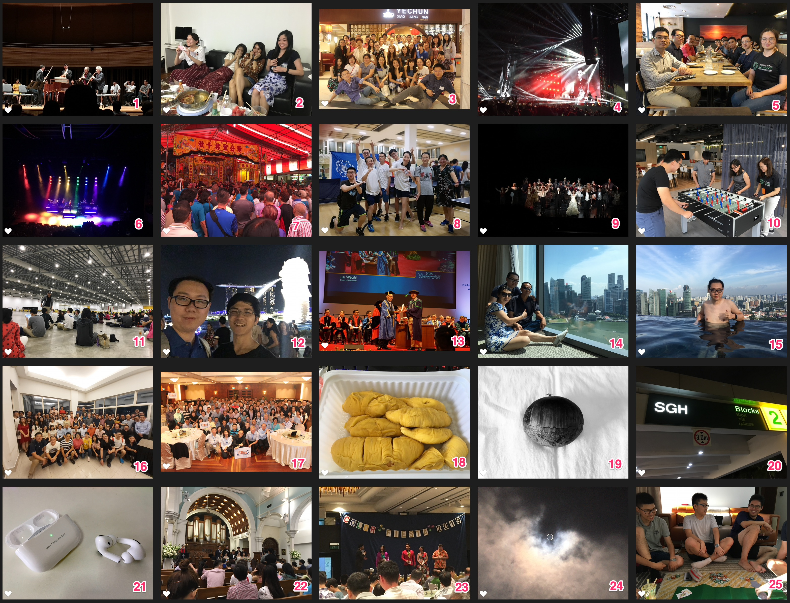

Hello 2020
总结2019年，展望2020年
今天是21世纪20年代的第一天，可能也是因为这个缘故，昨天才显得格外的特别。毕竟我们告别了又一个十年，迎接下一个十年。初中课本里讲到的2020年中国实现全面小康社会的时间点也将来临，第一批90后也将逐步跨入而立之年。着实会感觉到一些惶恐，莫非这就是中年危机提前到来了嘛。
想着十年前的这个时候，我还在高三，想必刚刚结束数学竞赛和计算机竞赛。记得那一年雪下的尤其的大，我每天的生活基本一成不变，白天上课，晚饭吃个白糖饼夹麻辣串，然后就去学校机房练习算法题了，刷完题再去食堂买个馍夹里脊当做夜宵，睡前看会格言杂志。虽然大家都说高三的生活很苦，但我现在觉得那个时候的生活简单而不乏味。现在的自己虽然每天都会玩会游戏看会视频来放松，但却觉得有些空虚。
五年前的这个时候，我还在博士一年级。当时第一学年秋季学期的7天假期也没有请掉，现在想想还是挺可惜的。然后过一阵子马上又要开学了。想起来第一学期的6002，作业真的是好多，然后当时随机算法课程的大作业也真的是特别有意思。那个时候也刚刚开始了第一个研究工作，做多目标计算仿真资源的最优分配，紧张而兴奋。
三年前的这个时候，我记得当时在实验室改文章跨年。几个好朋友相约去台湾玩，其实还是挺想去的，但是第一篇文章的修稿快要截止了，遂作罢。当然开心的是，这篇文章后来也很快接收了，发表在了控制领域的顶刊上面。那年的我才24岁，想想还是蛮年轻的。
回忆杀就到此结束了，岁月真的催人老啊。前一阵子，有人问我，有没有感觉自己变老了。虽然不想承认，但确实会往这方面想，身体和记忆都大不如从前了，更可怕的是父母也一天天变老，陪在他们身边的时间也越来越少了。像去年一样，也选一首歌作为主旋律吧，虽然跟我没有半毛钱的关系，但真的好感动。这首歌是林俊杰的“将故事写成我们”，今晚就有MV啦，好期待。“这一生，原本一个人。你坚持，厮守成我们。却小小声，牵着手在默认。感动的眼神，说愿意，走进我的人生。进了门，开了灯，一家人。执子之手，如此温柔。天长地久，并肩走。你深情，凝望着我说。幸福，是你，有了我。”
2019年总结
瞬间收藏家

以前看过一本书，叫瞬间收藏家，特别喜欢这个名字。一张照片，一段视频，都是某个瞬间，记录某天某地某人的某个故事。绘画、相片、视频，我们都试图想保留点什么，为了弥补我们那差劲的记忆，让我们能够在未来回想曾经。瞬间，时间的瞬间，空间的瞬间，那时的感觉、那时的味觉、那时的听觉、那时的视觉、那时的触觉。似乎有了定格之后，我们就会以为那一刻永远的属于我们，这也是我喜欢live photo的原因，让你保留你喜爱的女生在那一瞬间嘴角的笑容。所以活在记忆里的人啊，其实只是不想让时间流逝。
- 图1是在杨秀桃音乐学院听管弦表演。艺术的表现形式有很多种，有追求感官情感的共鸣，有追求节律赋格上的完美，也有追求机械与自然的和谐。这场音乐会表演了一个音乐小品，通过音乐的节奏音调音色来表达和推进一个故事。别具一格的是，乐团还通过形象的动作表演来让故事的表达更容易理解了。大意是几个男青“争奇斗艳，各显神通”，去追求一个年轻貌美的女子。这场音乐会还展示了一架18世纪的手工钢琴，声音会有些闷，听说保养也特别的精贵。
- 图2是农历新年大家一起看春晚。师姐师妹们特别喜欢朱一龙，当他出场的时候激动万分，哈哈哈，感觉真的好可爱。自己做了个番茄牛腩和清蒸鲈鱼，味道好像还行。
- 图3是南京大学的新春聚会，在冶春小江南聚餐。怀念当年在富春茶社吃早茶，然后去瘦西湖看风景。文思豆腐真的是好好吃！
- 图4是Marron 5的演唱会。有点坑爹的是主唱那天因为塞车迟到了，DJ暖了好久的场又给凉了。本来以为会有中文字幕的，结果后来除了熟悉的几首歌，都是在尬唱。国家体育馆还是不错的，来这边看球应该也非常棒！
- 图5是WorldQuant的线下聚会。当天随机两人组队，然后在规定时间内开发因子策略，并做报告展示策略的结果和想法。之后，大家去玩了密室逃脱。好像是叫恋爱大行动，以哆啦A梦为主题的，还蛮可爱的。就是当时的找不同的那关实在太费眼了。
- 图6是Troye Sivan的演唱会。见识到了很多神奇的人，然后也对澳洲英语口音印象深刻。小伙子真的好瘦啊，然后在舞台上蹦来蹦去的，太有活力了。周边感觉都是高中生，我和另外一个老年同学显得有点格格不入。不过真的超级嗨，堪比是个大型的Zouk。
- 图7是我家楼下的传统文化活动。应该在中国已经很少见了吧，这边经常玉皇大帝的生日、关羽的生日、某个娘娘的生日，都会举办祭典。看着戏子穿着超大的花脸面具，一个扮演王母娘娘还有一个神汉在神神叨叨，确实还是有点新奇。毕竟1元硬币都是自带八卦的国度。
- 图8是参加新加坡高校乒乓球赛。自己就是个打酱油的，上次打乒乓球可能还是小学的时候，那个时候好像每每下课都会打个十分钟，然后就很开心。自己对乒乓球还是不太熟练，球速有点快，反应还有各种应对有点跟不上。
- 图9是去看歌剧魅影。特别喜欢那个敲锣的猴子，除了面具和玫瑰，也算是歌剧魅影的一个标志吧。在B站上重温了歌剧魅影25周年纪念版，真的是被那个魅影还有女主给折服了。新加坡的表演还是差的蛮多的。然后当时似乎排了两三个月的场，每天又有两三场，也真是好奇这些演员是怎么适应这么高强度的表演。
- 图10是去WorldQuant参加alpha交流会，又认识了几个新的consultant。然后WQ的新办公室比以前大了好多，活动室也超级爽。可以看到海，各种xbox，乒乓球、国际象棋还有桌上足球，真的是工作休闲两不误。
- 图11是参加CFA Level 2的考试。这次真的没怎么准备，第一次考试这么虚。果然最后还是差一点点没有通过，还得今年再考一次了。要记的东西太多了，不好好花时间，还是蛮难通过的。今年报考人数似乎超级多，一级单独设了一天来考。有了去年的前车之鉴，这次没有被冻得感冒。
- 图12是昶哥来新加坡参加MSOM。我也去这个会当了把志愿者，做OM的人好多牛校的。还认识了一个在MIT读博，DE Shaw实习的博士生。昶哥依旧是那么帅气，刚好那段时间快是新加坡的国庆，昶哥还有幸看到了装甲车阅兵。
- 图13是参加博士毕业典礼。其实一开始拿到学位证的时候并没有太大的感觉。但是直到毕业这一天，可能周围都是毕业生，在I Was Here那里拍照，和老板和了影，还是挺感动的。哈哈，讲道理，我也是25岁就拿到了博士学位的人。
- 图14是爸妈来新加坡玩。带他们住了滨海湾金沙酒店，母上大人说下次还要来住。第一眼看无边泳池真的特别震撼，酒店本身的环境倒是一般挺Muji风格的。然后爸妈大概待了一周，当时也没啥时间概念，就是特别粘爸妈，感觉时间过得特别快。爸妈走的时候，还在机场驻留了好久，看着天上一架小黄点，算着时间，应该是他们的飞机，驻足又送了一会。其实新加坡还是有好多好玩的，只能下次再带他们玩了。
- 图15是无边泳池的剪影。真的是新加坡必来的一处景点啊。貌似现在好多condo顶楼也都有无边泳池了，真是好生羡慕。
- 图16是每年秋季老板家的聚会。组里的人真是壮大了好多，感觉一个屋子已经很难塞下了。也愿C4NGP，C4NGL两个研究中心，新的一年成果卓著，为新加坡民生作出卓越贡献。
- 图17是参加LOGMS会议。之前总听师兄师姐说这个会，还是第一次在家门口开。这里也辛苦XJ师兄了，交流访问的大部分时间都在筹备这个会议。虽然不是特别大的会，但前前后后，人事资源调配，都还是蛮费心的。老板还是比较有意思，在最后的gala dinner，献歌一首月亮代表我的心。哈哈哈，然后叫各位学术大佬一起上台唱，场面真的好热闹。谁说学者只会做研究。
- 图18是空军山芭的猫山王。想想自己因为上火，大概真的有两三年没怎么吃猫山王了。今年吃了好几次猫山王，简直太好吃了。无论是直接吃，还是冻着吃，比其他榴梿不知道好吃了多少倍。榴梿季又到了，是时候再去吃一波猫山王了。记得上次有个阿姨大概是买了20粒猫山王吧，感觉跟过冬一样，实在太可怕了。
- 图19是个栗子。只是用来举个不明不白的栗子。
- 图20是去SGH看病。应该是我第一次一个人去医院看病，当时连去哪里看都不知道，SGH又那么大。后来还是从偏门进了急诊室，都不知道在哪里挂号。不得不说这边的医疗效率太低了，等了五个小时，做了些常规的检测，看我是不是偏瘫。然后开了大街随处可以买到的止痛药给我吃了，然后就结束了。不知道是我有病还是啥情况，这边的医疗资源还是太差了。那段时间有了好多第一次，虽然是我人生的低谷期，但也成长了不少，以后还是要长点心啊。
- 图21是AirPods Pro。这款产品真的是期待已久了，便携又降噪，真的是生活学习当中的一大利器，应该是我今年买的最值的硬件了。大音希声。个头小，降噪稳，贴合高，不易掉。
- 图22是参加教堂婚礼。参加了不少婚礼，但在教堂还真是头一次。有一说一，唱诗班的歌真的是好好听啊。后面还有管风琴，如果有人能演的话，简直就太棒了。
- 图23是NUS工学院的年会。台上紫罗兰衣服的是我们系的一位特别德高望重的教授，美国工程院院士。感觉应该有70多岁了吧，还在带学生，和其他学者合作交流。值得一提的是，她是大名鼎鼎的贝尔曼的学生，我也是离dp大神又进了一步。哈哈哈。看着大佬在台上走秀，真是觉得他们心态比我年轻多了，会玩。
- 图24是新加坡的日环食。印象当中似乎在天文爱好者杂志上看过这次日环食的预告，没想到这个时候的我竟然真的在新加坡。本来以为天气不佳，然后自己最近又有很多面试，就不打算去看了。后来天气非常棒，想了想还是去滨海湾堤坝看了，毕竟下次同一地点是在54年后了，果然还是不错的。而且还看到了大批候鸟。不过论震骇，还是日全食更优秀。看到月亮的影子在大地一扫而过，万物俱籁，特别感动。
- 图25是昨天的跨年。去了师弟家玩德州扑克。师弟家就是有无边泳池，然后可以看到一片海的，真的是好羡慕啊。德扑还是挺好玩的，虽然借贷了几次，但是最终还是赢了不少。大家笑的就像地主家的傻儿子一样。
金榜题名
电影
- 最让人落泪的电影：前任3。那一首体面还有说散就散，还有孟云和林佳的错过，真是让人唏嘘不已。『你们都在等，等对方先放手』
- 最搞笑的电影：哪吒之魔童降世。哈哈哈，真的是超级搞笑啊，适合全家老小一起看。四川口音也是有点醉。没想到喜剧元素还挺多的，虽然很多套路都能预期到，但依然没有阻碍自己哈哈大笑和再三回味。据传哪吒是宜宾人，所以四川导演就请来了四川配音嘛，太乙真人这样恶搞真的好嘛，哈哈哈。不过真的好搞笑呀，适合全家老小都来看。于此同时还是蛮期待下一部和姜子牙的。之前看一个人说，人生会有三个阶段，一是意识到自己父亲是个普通人，二是意识到自己是个普通人，三是意识到自己的子女是个普通人。希望自己不要过这样的生活吧，难得走一趟，还是要精彩些的。虽然有些鸡汤，但是我命由我不由天，你是谁只有你自己的说了才算。
- 最名副其实的电影：小丑。没有想象中那么好，负能量略多，男主演技都是满分，没想到他还演过She离的主角，真的是风格差好多啊，一个忧郁，一个癫狂。喜剧都有一个悲情内核。没有对比，也无所谓悲喜。姓名happy，性别男，年龄未知，职业小丑，症状不可控狂笑。一个不知道自己身世，『一出生就成了一家之主，活着的意义就是给别人带来快乐』，想要成为一名谐星，想要成为一名儿子。有的小丑开起了快餐厅走上了人生巅峰，有的小丑拍起了黑白片拥趸无数。而他只是一个普通的小丑，对孩子会很有爱，对女人抱有幻想，对母亲十分孝顺。哥谭市有自己的历史进程，然而他也万万没想到一个人的命运可以如此瞬变。朋友给了一把枪，自己二次被殴，杀了三个金融资本家，心里五味杂陈，谐星梦最终戏剧收场，四个嘉宾走了一个。他是英雄嘛？立场不同，总会有不同判断。剧情比预期的要差一些，但是男主的演技和电影手法真的都非常棒。值得一看，但是还是要理性蒙面，搞好经济发展才是硬道理。
- 最经典的电影：老友记。今年二刷了老友记，好多人都跟我一样。不知道干嘛的时候，就看看老友记，实在太下饭了。年轻的时候喜欢Ross和Rachel，现在觉得更喜欢钱德勒了。
- 最有脑洞的动画：瑞克和莫蒂。第一季还觉得一般，不如南方公园的脑洞，但是后面几季真的很精彩。
- 最期待的电视剧：猎魔人。已经上映了，但最近也没怎么看。毕竟玩了昆特牌这么久了，巫师3也玩了会，还是想再了解下原作的剧情。
- 最扣人心弦的音乐剧：歌剧魅影。虽然总是让我想到万泉河水清又清，然后魅影带着红军帽子的样子。但也不减那些经典歌曲带来的震撼。
- 最励志的音乐剧：汉密尔顿。这部剧也是把我看哭了，真的是太好看了。对汉密尔顿的最初印象，应该是从《伟大的博弈》这本书来的，知道他缔造了美国的金融体系，也知道了伯尔后来犯了叛国罪，但不知道汉密尔顿的这一生是多么的精彩。有生之年，一定要看一次现场版。起初只是对一开始的rap风吸引住了，后来听了my shot，被这个年轻汉密尔顿的精神所折服了。整部剧简直要感动的要死，直到后来汉密尔顿失去了妻子失去了大儿子，然后自己决定以死去教会别人how to say goodbye，以至eliza又决定让自己重回史学家的视角记录汉密尔顿的故事和建立纽约第一个孤儿所，简直要泪崩了。人性的光辉为何能如此的耀眼，让我觉得都睁不开眼睛，让我觉得自惭形愧。给五星实在太对不起这部剧了，绝对是人生必看的一部剧。I’m not throwing away my shot!同一首helpless，同一首satisfied，不同场景不同意味。
- 最让人停不下来的电视剧：庆余年。一堆老戏骨，张若昀也很可爱。
书籍
- 最有心的书籍：木朵绘本系列。真羡慕有这么一个细腻而且会画画的父亲，实在是太有心了。
- 最看破生死的书籍：风沙星辰。不知死，焉知生。如果人生可以倒过来，一定是会懂得更多的事，也会纠正更多的错误。人活一个精气神，即使被束缚即使被压抑，内心也一定会在某天存在某种渴望的冲动，然后得以付出实践。行尸走肉的度过这一生，不留一点痕迹，真的是太浪费了，浪费了造物主的一片赤诚，浪费了自己唯一一次机会。所以趁着我们还有机会，努力去探索，热爱这个世界，了解自己，了解他人，连接世界，连接他人。珍惜每一次经历，去迎接更美好的未来。他对天空无限憧憬，最终投入它的怀抱，化作了一条航迹云。
- 最引人入胜的书籍：Hedge Fund Market Wizards。只读了一半，但是里面各种大佬的故事真的让人激动人心。从这本书第一次知道Edward Thorp，真的是神一样的人物。
- 最值得期待的书籍：The Man who Solved the Market。还没开始看，但已经摩拳擦掌啦。
音乐
- 最喜欢的音乐：将故事写成我们。原来是别人的故事。这首歌太适合在婚礼上用了。
- 单曲循环最多的音乐：Merry Christmas Mr. Lawrence - FYI。有段时间，一直在听这个。
- 最励志的音乐：My Shot。汉密尔顿里的一曲。
- 最感动的音乐：Wonderful Tonight。老友记里钱德勒给莫妮卡订婚的时候用的音乐，也是一首我循环了很久的歌。
游戏
- 玩的最久的游戏：昆特牌。大概是从昆特牌刚回归初心入的坑，大概也就今年7、8月份没怎么玩，其余时间每天都会玩一玩。享受着收集卡牌，组卡组，和人斗智斗勇的过程。新的一年，要再接再厉啊，在职业天梯力争上游。
- 故事讲的最好的游戏：巫师3。其实玩这款游戏还是蛮能平复心情的，在猎魔人的世界里体会世界的冷暖。没事的时候，也可以打一打上古的昆特牌。游戏里任何一个转瞬转角都会有风景。
- 组合最多的游戏：Noita。一个非常不错的Rouge-like游戏，随机元素、永久死亡、修改魔杖、各种魔法的组合搭配，让这款游戏超级炫酷。有以撒的结合的感觉，但是应该可以做到更酷炫。
- 最期待的游戏：Cyberpunk 2077。约莫着还有105天就解锁啦。
- 最暖心的游戏：Kind Words。有段时间情绪低落，是这款游戏让我熬了过来。
软件
- 最聪明的软件：Devonthink 3。虽然这款软件真的好贵，但是那个find also的功能好用的不得了。以前不知道一些不同学科的文献之间还存在着某种联系，用这个软件可以更方便的把所有相关文件都列出来，然后交叉对比。以后会逐步把自己的知识管理系统从zotero转移到Devonthink上来。
- 最适合零散时间的软件：Reeder 4。买了桌面版和移动版，以后看RSS久非常的方便了。
- 提高效率最牛逼的软件：Alfred 4。以前用的是盗版，今年入正了。因为发现自己用的频率实在太高了，已然离不开这款软件和macOS的生态系统了。
硬件
- 让人安静专心的硬件：AirPods Pro。买了之后，几乎天天上下班还有工作的时候都会带，降噪自然不如头戴的，但是已然很棒了。
- 用起来最顺滑的硬件：Apple Pencil。买来之后还没用来画画呢，倒是记笔记什么的特别的方便。
旅行
- 二月过年和基友去了泰国，还是挺好玩的。
- 十二月本来计划去美国，甚至去时代广场跨个年。无奈美国签证又出了点问题，得要推迟行程了。
工作
还在NUS做博后，老板成立了两个研究中心。我在港口那边做些仿真优化的研究，还有APL的集装箱装船优化项目。平时也帮老板师兄师姐打打杂。学校还是清闲，但就是温水煮青蛙，让人欲望变低，有些不开心。最近投了些fund，还是早点出去看看吧，既然MOE的项目已经结束了，自己也无心学术这条路，还是早点入行比较重要。看着同龄人都有了自己的fund，心里还是挺羡慕的。
2020年展望
习惯用OmniFocus来计划工作，但是overdue的项目也越来越多。最直接的新年计划可能是把去年的翻出来，然后划掉2019改成2020吧。虽然计划挺好，但是我的执行力却有待提升。新的一年，先从解决自己的一些坏习惯开始吧。比如拖延、晚睡、被动、不经常运动等等，然后找到一份心仪的工作。另外已经拿到新加坡永久居民了，也需要制定下未来的长期规划了。是走是留，还是得早点想清楚。学术工作还是没有完结，也有一些新的研究进来了。但还是离开NUS之前，尽量把文章送审出去吧。CFA Level 2还要再考一下，这次不能马虎大意了，要早点做准备。然后买了个日语学习app的两年会员，打算学一学，今年应该可以安排一下日本的旅行。这个博客更新频率也有点太低了，今年要努力做到更新。2020年应该会有很多挑战和变动，拥抱变化，拥抱生活，也为我的而立之年早日做准备。
 本作品采用知识共享署名 2.5 中国大陆许可协议进行许可。欢迎转载，但请注明来自Mount Greenwicher的文章《Hello 2020》，并保持转载后文章内容的完整与无歧义。本人保留所有版权相关权利。
本作品采用知识共享署名 2.5 中国大陆许可协议进行许可。欢迎转载，但请注明来自Mount Greenwicher的文章《Hello 2020》，并保持转载后文章内容的完整与无歧义。本人保留所有版权相关权利。

微信打赏

支付宝打赏